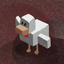
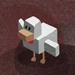

Botwyniel

Botwyniel
A discord bot written in python using discord.py
Botwyniel is ${'' if voice != None else "not"} connected to a voice channel on this server.
Now playing: ${current.title if voice != None and hasattr(voice, 'current') and current != None else ""}
<%doc> ${"⏸" if voice != None and player != None and player.is_playing() else "▶️"}| # | Title | Duration |
|---|---|---|
| ${loop.index + 1} | ${song.title} | ${(str(song.duration // 60) + "m" if song.duration > 60 else "") + "{:02d}s".format(song.duration % 60)} |
Botwyniel is not connected to a voice channel on this server.
To get started, click to select a channel to play music.